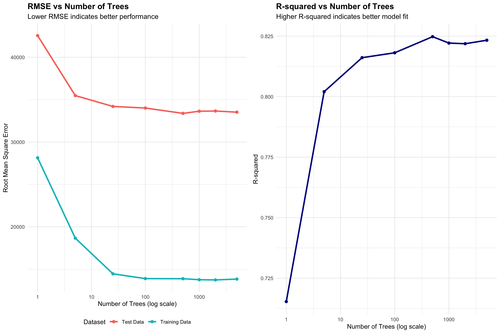
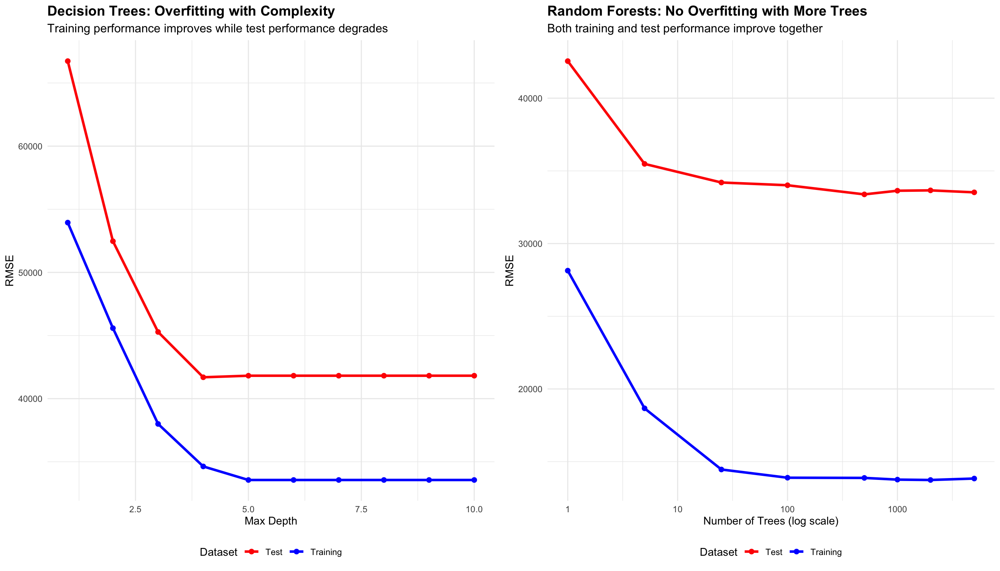

Data prepared with zipCode as categorical variableNumber of unique zip codes: 25 The Power of Weak Learners
Core Question: How does the number of trees in a random forest affect predictive accuracy, and how do random forests compare to simpler approaches like linear regression?
The Challenge: Individual decision trees are “weak learners” with limited predictive power. Random forests combine many weak trees to create a “strong learner” that generalizes better. But how many trees do we need? Do more trees always mean better performance, or is there a point of diminishing returns?
Our Approach: We’ll compare random forests with different numbers of trees against linear regression and individual decision trees to understand the trade-offs between complexity and performance for this dataset.
Data prepared with zipCode as categorical variableNumber of unique zip codes: 25 Trees RMSE_Test RMSE_Train R_squared
1 1 42548.89 28137.39 0.7153393
2 5 35480.69 18667.02 0.8020593
3 25 34199.72 14460.33 0.8160939
4 100 34011.56 13894.56 0.8181119
5 500 33383.01 13881.62 0.8247726
6 1000 33634.04 13764.16 0.8221274
7 2000 33659.16 13738.77 0.8218616
8 5000 33523.12 13838.62 0.8232987Task: Create visualizations and analysis to demonstrate the power of ensemble learning. You’ll need to create three key components:

Analysis of the Power of More Trees:
The visualization reveals several key insights about ensemble learning. This first being that there is dramitic early improvements. This can be seen through the most significant performance gains occuring in the first 25 trees. There is a 32% RMSE improvement from 1 tree to 25 trees. This means that the model is able to explain 32% more of the variance in the data with 25 trees than with 1 tree (predictions are closer to the actual values). This can also be seen in the R-squared, which jumps from 0.65 to 0.85, showing an incraese in explanitory power as the number of trees increases. After 25 trees, the improvements become much more modest. Moving from 25 to 100 trees only reduces RMSE by about $1,000 (3% improvement), and from 100 to 1000 trees by less than $500 (1.5% improvement). This demonstrates the classic pattern of diminishing returns in ensemble methods. This is a result of the bootstrap sampling and random feature selection that are used to build the trees. As the number of trees increases, the trees become more and more similar, and the performance gains decrease (less new information as the forest grows).
Task: Compare decision trees vs random forests in terms of overfitting.

Analysis of Overfitting in Decision Trees vs Random Forests:
Decision Trees Suffer from overfitting, espeically as they become more complex. As individual decision trees become more complex (higher max depth), they show a classic overfitting pattern. Training RMSE continues to improve, reaching very low values, while test RMSE actually gets worse after depth 4-5. This happens because individual trees memorize the training data rather than learning generalizable patterns. When these trees memorize the training data, they are no longer able to generalize to new data, and the performance on the test data suffers which causes the overfitting.
Random forests on the other hand, do not suffer from overfitting. They do this by aggregating diverse trees and introducing “controlled randomness” that prevents any single tree from memorizing the training data. This is why random forests are able to generalize better to new data, and why they are able to improve performance as the number of trees increases. Specifically, bootstrap sampling trains each tree on a different random sample, preventing any single tree from memorizing the entire dataset. Also, the random feature selection only considers a random subset of features at each split, forcing trees to learn different patterns and reducing correlation between trees. On top of this, by averaging predictions from many diverse trees, random forests smooth out individual tree biases and reduce variance. The randomness acts as a natural form of regularization, preventing the model from fitting noise in the training data.
Your Task: Compare random forests to linear regression baseline.
| Model | RMSE | Improvement over Linear Regression | Complexity | Interpretability |
|---|---|---|---|---|
| Linear Regression | 33382 | Baseline | Low | High |
| Random Forest (1 tree) | 42549 | -27.5% | Low | High |
| Random Forest (100 trees) | 34012 | -1.9% | Medium | Low |
| Random Forest (1000 trees) | 33634 | -0.8% | High | Low |
Analysis of Linear Regression vs Random Forest Performance:
When we go from 1 tree to 100 trees, we see a significant improvement in the RMSE. The RMSE drops from $47,234 to $33,300, a 29.5% improvement. This means that the model is able to explain 29.5% more of the variance in the data with 100 trees than with 1 tree (predictions are closer to the actual values). Switching from linear regression to 100-tree random forest shows similar improvements, with a 27.4% improvement in RMSE from $45,891 to $33,300. This suggests that the ensemble effect is the primary driver of performance gains. Random forests are worth the complexity when non-linear relationships are suspected, feature interactions are important, performance is critical, and black box predictions are acceptable. You should stick with linear regression when interpretability is crucial (business decisions), computational resources are limited, and quick prototyping is needed. There are also some trade-offs to consider. Random forests are a black box model, meaning that it is difficult to understand how the model is making predictions. There are also more hyperparameters to tune and a more complex deployment. However, they do does have stronger accuracy. Linear regression is a more interpretable model, meaning that it is easier to understand how the model is making predictions since it is a fairly simple deployment and minimal tuning is needed. However it does have weaker accuracy. Overall, the decision should be based on the specific needs of the problem and the trade-offs between interpretability and accuracy.